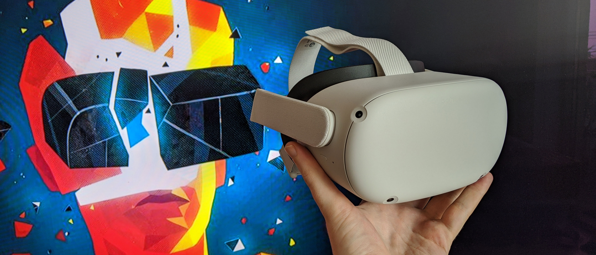
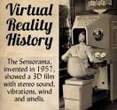
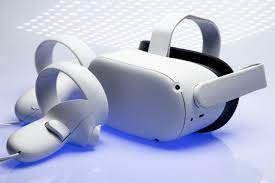

Inicio a la Realidad Virtual
La definición exacta del diccionario sobre la realidad virtual es: un conjunto de téxnicas que permiten crear imágenes y espacios simulados en los que una persona, mediante un dispositivo visual, tiene la sensación de estar y poder desenvolverse dentro de ellos.
La Realidad Virtual(RV) es un entorno de escenas y objetos de apariencia real - generado mediante tecnología informática - que crea en el usuario la sensación de estar inmerso en él. Dicho entorno se contempla a través de un dispositivo conocido como gafas o casco de Realidad Virtual.
Las primeras gafas de Realidad Virtual fueron creados en 1960 por Morton Heilling, y por ello se le conoce como el padre de la Realidad Virtual. Este cinematográfo e inventor, había desarrollado el Sensorama en 1957, una máquina bastante aparatosa que permitía al usuario disfrutar de experiencias multisensoriales
¿Qué es el Oculus Quest 2?
Un dispositivo de hardware actual relacionado con la interacción es el Oculus Quest 2, que es un casco de realidad virtual(RV) desarrollado por Oculus, una subsidiaria de Facebook. El Oculus Quest 2 se lanzó en 2020 y ofrece una experiencia de RV inmersiva que permite a los usuarios interactuar con entornos virtuales y juegos utilizando el seguimiento de movimiento y controladores manuales.
Es un ejemplo de cómo la tecnología de hardware ha avanzado significativamente en la última década para proporcionar experiencias de interacción más inmersivas y envolventes
La idea general detrás del Oculus Quest 2 y su predecesor, el Oculus Quest original, se originó con Oculus VR, una empresa fundada por Palmer Luckey en 2012. Palmer Luckey era un entusiasta de la realidad virtual que había estado experimentando con la creación de sus propios dispositovs RV antes de funadar Oculus VR. La visión de Luckey era llevar la RV al mercado de consumo de una manera significativa y asequible.
Características del dispositivo
El Oculus Quest 2 es muy popular y versátil que ha sido muy apreciado por su calidad y asequilibidad.
Varias de sus características son:
Procesamiento autónomo: A diferencia de otros dispostivos, el Oculus Quest 2 es u sistema autónomo, es decir, no necesita conexión con un PC o consola, lo que lo hace muy pórtatil.
Seguimiento de movimiento: Utiliza cámaras incorporadas para el seguimento de movimiento, lo que permite a los usuarios hacer acciones libremente en el espacio y realizar gestos naturales en el mundo virtual
Controladores Touch: Incluye controladores manuales que ofrecen un alto grado de precisión y retroalimentación táctil. Se adaptan fácilmente a tus manos y permiten una interacción más realista.
Amplia biblioteca de contenido y actualizaciones frecuentes, lo que ha mejorado la funcionalidad y la experiencia del usuario a lo largo del tiempo.
Precio asequible: El Quest se ha destacado por su precio relativamente asequible en comparación con otros dispostivos de Rv de alta calidad.
Beneficios sobre la interacción persona-ordenador
El Oculus Quest 2 aporta varios beneficios significativos en cuanto a la interacción, lo que o conviierte en una plataforma de RV atractiva para una variedad de experiencias. Aquí hay algunos ejemplos de lo que aporta en términos de interacción.
Interacción inmersiva: El Quest 2 ofrece una experiencia de interacción altamante inmersiva. Los usuarios pueden moverse libremente en el espacio virtual, lo que les permite interactuar de manera natural con el entorno y los objetos en el mundo virtual.
Sin cables ni sensores externos: Es un sistema autónomo, esto simplifica enormemente la configuración y hace que la RV sea más accesible para un público más amplio.
Experiencias sociales y colaborativas: El Quest 2 permite a los usuarios interactuar con otros usuarios en el mundo virtual a través de aplicaciones y experiencias sociales. Esto incluye reuniones virtuales, eventos en línea y juegos multijugador, lo que añade un elemento social a la interacción RV.
Accesibilidad: La portabilidad y el precio asequible han hecho que la RV sea más accesible para un público más amplio, lo que significa que más personas pueden disfrutar de las experiencias de interacción en la RV sin una costosa inversión en hardware adicional.
En conclusión, el Oculus Quest 2 mejora la interacción al ofrecer una experiencia más inmersiba y y natural, con controladores, precisos, seguimiento de movimiento y una amplia variedad de contenido. Esto lo convierte en una opción atractiva para los juego, aplicaciones educativas, aplicaciones de productividad y experiencias sociales en el mundo virtual.
Para más información sobre Oculus Quest 2 y su experiencia, siga el enlace.